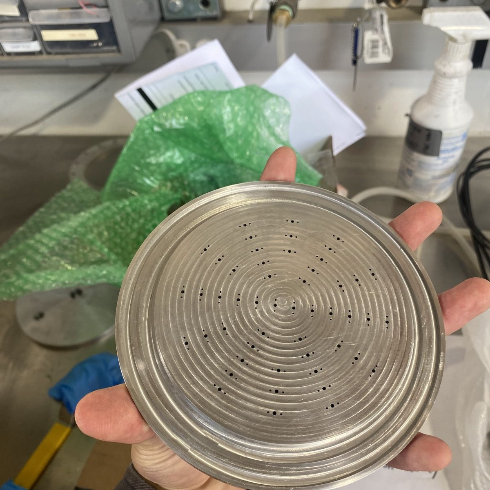
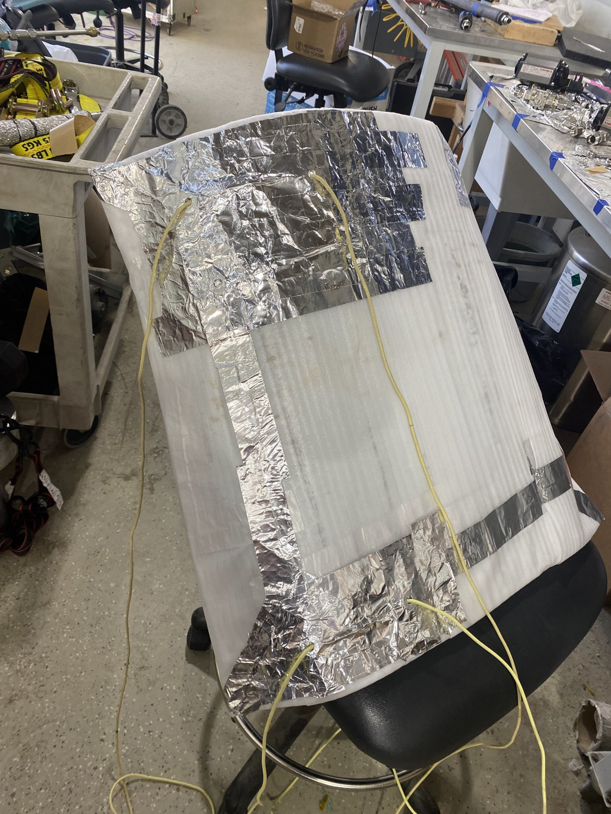
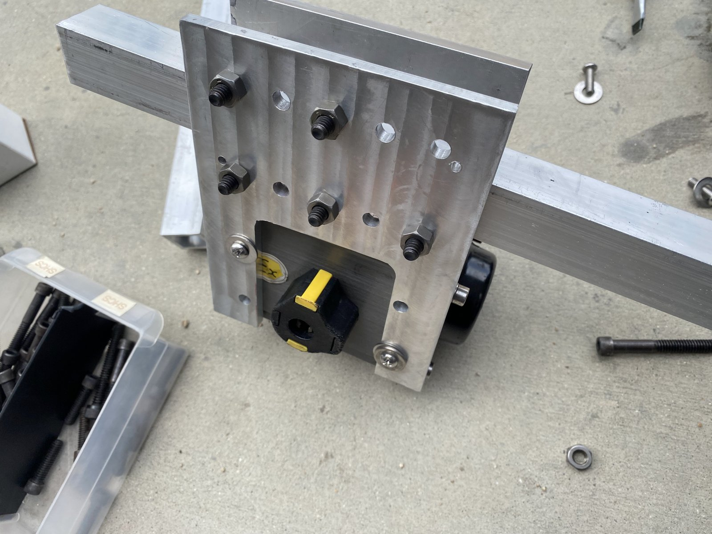

Role: Propulsion Engineer working on MOCH4: a methalox 8in diameter rocket with a 1300lbf engine
Testing role: Bottle operator
After an unsuccessful hotfire caused by feed system and injector issues, I work to redesign the injector to add additional seals to prevent interpropellant leakage and reconfigure passageways to allow for more distributed injection and prevent faceplate burn through

I designed and fabricated tank insulation on a budget of $7 using old aerogel from previous tanks, carefully resealing it in cryo-rated wrapping, and designed a rope system so that they could be removed immediately before launch while on the launch rail.

Our main valve actuators are external to the rocket to save weight. On a budget of $0 I used scrap metal to create mounts to hold up the pneumatic actuators outside the rocket to turn our main valves. This design needed 4 degrees of freedom as the exact location of the valves in the lower section had not been decided at the time of my work.
